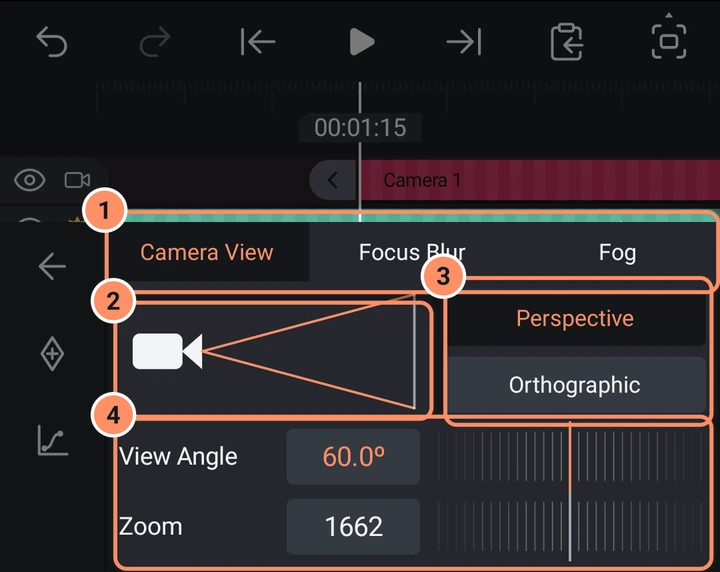
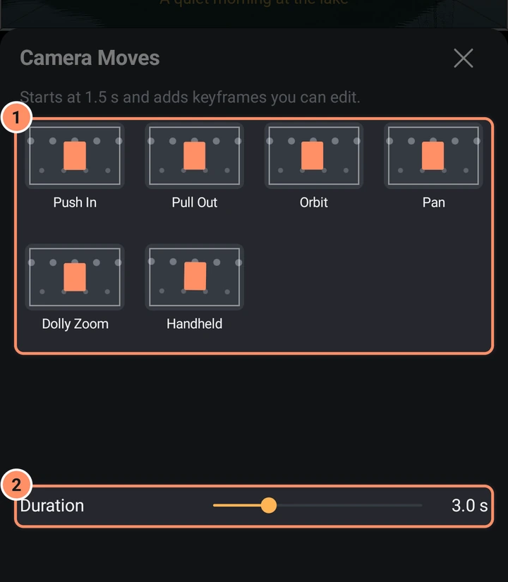

攝影機圖層與 3D
讓虛擬攝影機穿梭於你的圖層之間、依深度排列圖層、為場景打光，並加入 3D 模型。
攝影機圖層
攝影機圖層會讓專案變成三維：圖層具有深度（Z），而攝影機決定畫面中能看到什麼。從新增、物件／素材、攝影機加入一個。它會持續整個專案，使用透視投影，視角為 60 度，並且預設關閉對焦模糊與霧效。
第一次新增攝影機時，會出現提示：「若要透過攝影機觀看，請開啟此面板並開啟攝影機視角。」攝影機視角按鈕位於預覽列中（請參閱編輯器畫面）。開啟後，你會透過攝影機看到專案。否則，攝影機會以深色矩形框顯示在預覽中。
有多個攝影機時，會使用在播放頭位置上作用中、位於最上層的攝影機。
移動攝影機
選取攝影機圖層。在預覽中拖曳可平移，捏合可變更視角。在變形中，移動、旋轉和大小都適用於攝影機；大小會改變視角。開啟深度順序（見下文）後，傾斜也會生效：它會讓攝影機向上、向下或向側面看。傾斜是變形的進階控制之一（按住變形即可切換）。
攝影機選項
共有三個分頁：
- 攝影機視角。包含深度順序開關，開啟時還會顯示排序（見下文；在電腦上位於最後一列）、視錐示意圖、透視和正交按鈕、視角（0.1 至 179.9 度），以及隨視角變化的縮放。
- 對焦模糊。一個開關，之後是對焦距離（對焦平面會以「位於 Z ...」顯示）、景深和模糊強度。
- 霧效。一個開關、一個顏色，以及近與遠距離。

每一列都可以用關鍵影格按鈕製作動畫。
攝影機運動
工具格線中的攝影機運動會加入現成的運動效果：推進、拉遠、環繞、平移、推拉變焦或手持。每個格子都有動畫預覽。將時長設定為 0.5 至 10 秒。運動會從播放頭位置開始，若攝影機圖層先結束，運動會被縮短。選擇另一個格子或變更時長會更新運動，結果是可以編輯的一般關鍵影格。開啟深度順序後，環繞會讓攝影機繞著場景旋轉，並持續對準中心，使不同深度的圖層相互穿插、前後錯開。

深度順序
開啟深度順序後，攝影機會決定哪個圖層在前面：距離攝影機較遠的圖層會被繪製在較近圖層的後面，與它們在時間軸上的位置無關。當攝影機移動時，順序也會隨之變化。此開關位於攝影機選項的攝影機視角頂部，並會與專案一起儲存。新專案預設開啟。5.0 版之前建立的專案預設關閉，以保留原本的外觀；若要使用，請將其開啟。
- 圖層在 3D 中時才會參與排序：在深度（Z）上移動、傾斜、是 3D 模型，或是具有深度的粒子、3D 散佈或 3D 碎裂。
- 若要讓平面圖層參與排序，請選取它，然後點一下其工具第 2 頁上的 3D圖層按鈕。在深度順序開啟時，形狀、照片、影片、文字、繪圖和群組都會出現此格子，啟用時會亮起。
- 平面圖層會保留其在時間軸上的位置，並將 3D 圖層分隔成不同的堆疊：時間軸上位於它上方的 3D 圖層會保持在它前面，位於它下方的 3D 圖層則會保持在它後面。
- 深度相同的圖層會保持時間軸上的順序。
- 當排序設為依圖層時，每個圖層都會被整體排序。兩個互相穿過的圖層不會互相切割：位置較靠近攝影機的那個會被繪製在前面。3D 模型的面與特效的各個部分只會在彼此之間排序，而不會與其他圖層的各個部分混合排序。依區塊會改變這一點：見下文。
- 當攝影機傾斜或環繞時，3D 散佈、3D 碎裂以及 3D 形狀特效（例如立方體和環面）會和其他 3D 圖層一樣隨之轉動。3D 散佈和 3D 碎裂各部分的光線，在攝影機滾動或縮放時保持不變。
依區塊排序
排序位於攝影機選項的攝影機視角中（深度順序開啟時），有兩個選項。依圖層會將每個 3D 圖層整體排序。依區塊則會將 3D 散佈和 3D 碎裂的各個部分、3D 模型的面，以及具有深度的粒子，逐一與同一堆疊中的其他 3D 圖層一併排序。這樣相互穿越的物件就會在應該重疊的地方重疊，例如兩個碎裂物件互相穿過，或模型穿過一團粒子。新舊專案預設都是依圖層。
將區塊與其他圖層混合是 3D 散佈、3D 碎裂與粒子卡片（粒子需開啟深度）以及模型選項中的開關。當排序設為依區塊時，所有圖層都會啟用此項。若要讓該圖層保持完整，請將其關閉：此時它會以單一項目的形式，在自己的深度進行排序。開啟此開關也會同時為專案開啟深度順序與依區塊，因此只需一個開關即可。
依區塊不會做到的事：
- 互相切割的區塊不會被分割。每個區塊、面或粒子都會依其中心的深度來放置，因此穿過某個平面的區塊會完整地顯示在該平面的前面或後面。
- 群組不會混合。區塊只會在專案的最上層混合：群組會被整體排序，其內部不會混合。群組內部不會顯示此開關。
- 有些圖層會保持完整，並以單一項目排序：具有陰影、邊框、剪裁遮罩、重複、回音、動態模糊或真實動態模糊的圖層；後面接有特效（移動與文字特效除外）的 3D 散佈與 3D 碎裂；帶有其他特效的粒子與模型；以及被攝影機的對焦模糊模糊化或被霧效染色的圖層。
- 平面圖層仍會如上所述把 3D 圖層分隔成堆疊。區塊只會在同一堆疊內混合。
燈光圖層
新增、物件／素材、燈光會加入一盞燈。與攝影機一樣，它會持續整個專案，並且本身永遠不會被繪製出來。燈光會為 3D 模型，以及 3D 散佈和 3D 碎裂的各個部分提供陰影。
選取燈光，然後點一下燈光選項：
- 環境光會從各個方向均勻照亮。平行光（預設）會從一個方向照射，就像太陽。點光源會從燈光所在的位置向外照射，就像燈泡，距離越遠越弱。
- 顏色，以及 0 至 4 的強度（預設 1）。
- 衰減（僅點光源，0 至 100，預設 1）表示光線隨距離減弱的速度。
以上所有項目都可以用關鍵影格製作動畫。新燈光會放在場景中央的前方，並照向場景。使用變形來移動點光源（包括 Z 軸），並使用旋轉和傾斜來轉動平行光。
最多可同時使用四盞燈。只要有燈光正在使用，燈光就會取代 3D 模型（在模型選項中）以及 3D 散佈和 3D 碎裂的光線設定。沒有燈光圖層的專案外觀完全不變。小技巧：在平行光旁加入一盞環境光，這樣背光的面就不會是全黑。
將圖層傾斜為 3D
任何圖層都可以沿 X 軸和 Y 軸傾斜。開啟變形中的傾斜分頁，裡面有以度為單位的 X軸旋轉 和 Y軸旋轉。在旋轉或傾斜開啟時於預覽上拖曳，也會傾斜圖層。
當圖層已傾斜、其傾斜已製作動畫、是 3D 模型，或具有 3D 特效時，旋轉分頁會變成 3D 觸控板（「拖曳此處以進行 3D 旋轉」），並附有 X、Y 和 Z軸旋轉欄位。單指可傾斜圖層，雙指可扭轉圖層。更多選單中的重設3D旋轉可將它恢復原狀。
3D 特效
3D類別中的特效會將圖層變為立體：立方體、方塊、中空方塊、圓柱、橢球、環面、角錐、八面體、六角柱、星形柱、星形多面體、心形、三軸十字、光柵擠出、翻轉圖層、球面化和隧道。當其中一種特效存在時，旋轉和傾斜控制項會改變該特效的旋轉。請參閱特效庫。
3D 模型
新增、物件／素材、3D模型會載入 .obj、.glb 或 .gltf 檔案。若模型具有材質與圖片檔案，請與模型一併選取。檔案總大小最多 256 MB，超過 50,000 個三角面的模型會以簡化形式顯示（應用程式會告知你）。
模型選項包含大小、自動旋轉、光線角度、環境光和光線強度，全部都可以製作動畫。專案中有燈光圖層時，這三項光線設定不會使用。模型也具有變形（包括 3D 旋轉）、不透明度、特效和預設集。